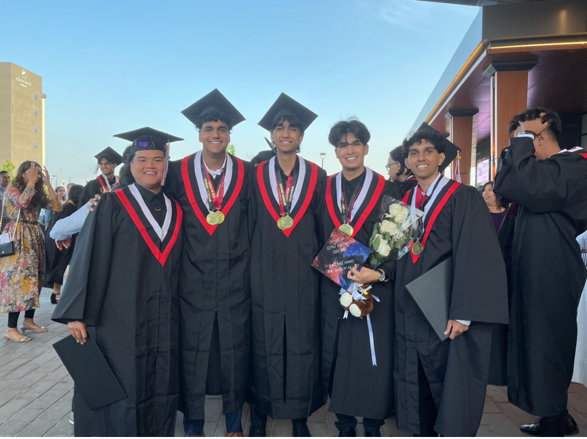
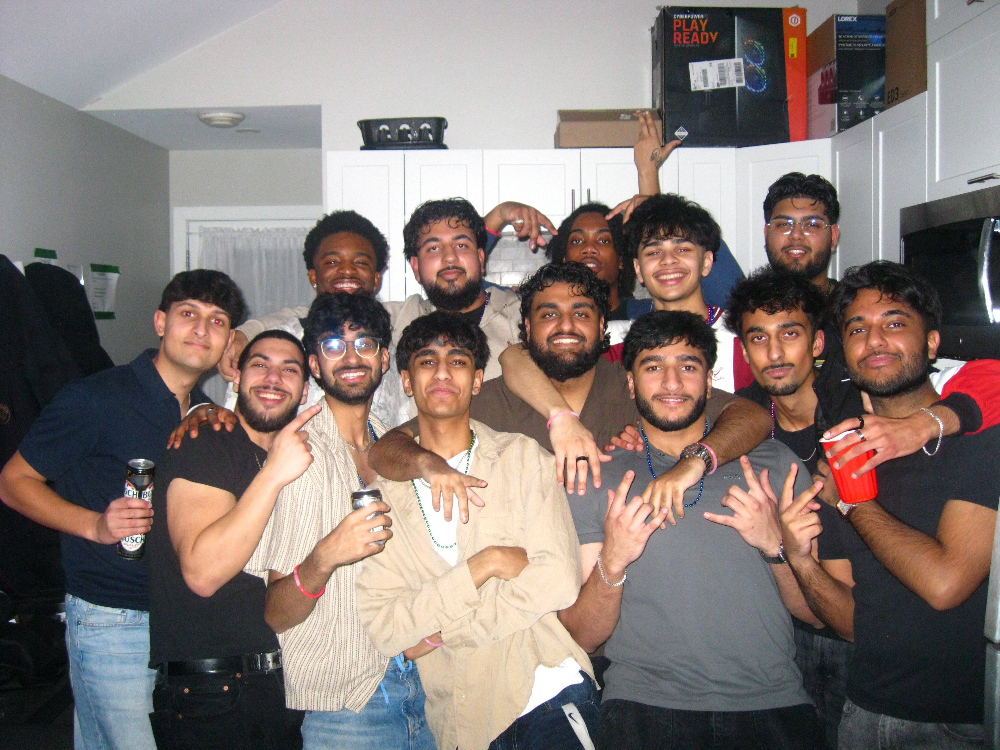

Hello, I'm Nithin Balamurugan
Computer Science Student at University of Western Ontario | Graduating April 2027
AI Research Platform Developer | Co-author of "Tiny Recursive Models on ARC-AGI-1" Research Paper

Computer Science Student at University of Western Ontario | Graduating April 2027
AI Research Platform Developer | Co-author of "Tiny Recursive Models on ARC-AGI-1" Research Paper
I'm a Computer Science student at Western University (April 2027) currently working in data engineering with Azure and Databricks.
I also did research on Tiny Recursive Models and co-authored an arXiv paper on ARC-AGI-1. Right now, I'm focused on breaking into Data Engineering and ML infrastructure full-time.


Key Stack: Azure, Azure Databricks, Azure SQL, Azure Data Lake Storage, CI/CD, Datadog
Key Stack: Azure, Azure Databricks, Azure Data Factory, Azure DevOps, Salesforce, SQL
Key Stack: Python, NumPy, OpenCV, FFmpeg, 3D Rendering, Point Clouds
Key Stack: IBM z/OS, COBOL, JCL, Node.js, FastAPI, XGBoost, SHAP, Db2
Key Stack: Python, FastAPI, NLP, Embeddings, Vector Search, GPT-3.5, Docker, AWS, Next.js
Inductive Biases, Identity Conditioning, and Test-Time Compute
Impact: This paper currently has 3 citations.
Working on a demo project for a media company to solve inconsistency issues in AI video regeneration. My role focuses on 3D rendering and point cloud technology to ensure consistent character and scene representation across video generations, eliminating the randomness that plagues current AI video tools.

Built a full-stack AI finance application using React, Node.js, and PostgreSQL to track expenses, budgets, and spending, with secure user authentication and account management via Supabase, including protected routes, session handling, and user-specific data isolation. Developed a Python-based AI backend (FastAPI) that leverages Pandas for data analysis and OpenAI GPT-3.5-turbo for natural language processing, implementing a hybrid AI system for personalized financial insights.

Developed a high-accuracy PDF-to-CSV conversion algorithm using Python that extracts every table into separate CSV files, generates a full-document text file, and outputs structural metadata files detailing table outlines, dimensions, and formatting, robust across any document layout. Built a modular extraction pipeline using Docling, PyMuPDF, Pandas, and a 3-layer OCR stack.

Co-authored "Tiny Recursive Models on ARC-AGI-1: Inductive Biases, Identity Conditioning, and Test-Time Compute", analyzing the behavior of Tiny Recursive Models (TRMs) on the ARC-AGI-1 benchmark. Performed empirical ablations and efficiency analyses to isolate the impact of test-time compute, puzzle-identity conditioning, and recursion depth on model performance. Benchmarked TRMs against a QLoRA-fine-tuned LLaMA 3 8B baseline. (PAPER LINK AT THE END OF THE PAGE)
Developed a personal portfolio website to showcase projects in depth and share background and skills. Implemented using Next.js, React, TypeScript, server-side rendering (SSR), React Hooks, Tailwind CSS, PostCSS, responsive design, dark mode, animations, form handling, ESLint, Node.js, npm, and Next.js Google Fonts.
Built a full-stack mobile reading log application using React Native and Expo, enabling chapter-level note-taking with offline-first persistence via AsyncStorage and cross-platform support for iOS and Android. Implemented social features using Firebase Authentication and Cloud Firestore, including user accounts, friend connections, and real-time commenting on shared chapter notes. Integrated an AI chatbot to summarize and clarify user notes.
Built a cross-platform app focused on bridging long-distance relationships using Expo, React Native, and TypeScript, with Expo Router handling navigation across iOS, Android, and web. Designed a Supabase backend with Postgres, auth, storage, and real-time sync to power posts, letters, and calendar journaling features.
Originally built as a VM-hosted Docker stack (FastAPI, Celery, RabbitMQ, Redis, Neo4j) with a Next.js frontend to convert unstructured content into queryable knowledge graphs. To avoid entering payment details for cloud VM providers, I rebuilt it as a no-card demo architecture on Vercel + AuraDB + Upstash while keeping the same core extraction flow.
Full-stack AI LaTeX resume builder that converts resume PDFs to editable structured content and exports clean LaTeX for Overleaf. Users can upload a PDF, edit parsed entries, enhance bullets with AI, and generate ATS-friendly output quickly.
Functional replica of a top-5 banking system on IBM z/OS mainframe. Implemented core components with COBOL, JCL, SQL, and REXX. Integrated Node.js frontend with FastAPI backend for real-time credit risk evaluation using XGBoost and explainable AI (SHAP).

Built an automated self-watering plant system using Arduino to monitor soil moisture and trigger watering below a set threshold, enabling plant care during long absences. Integrated sensors and output modules (LCD, moisture sensor, LED, buzzer, water pump) using Java and Matlab to display moisture data and signal watering events.